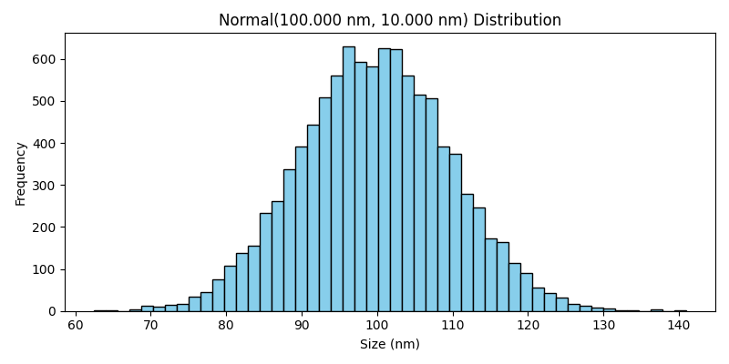
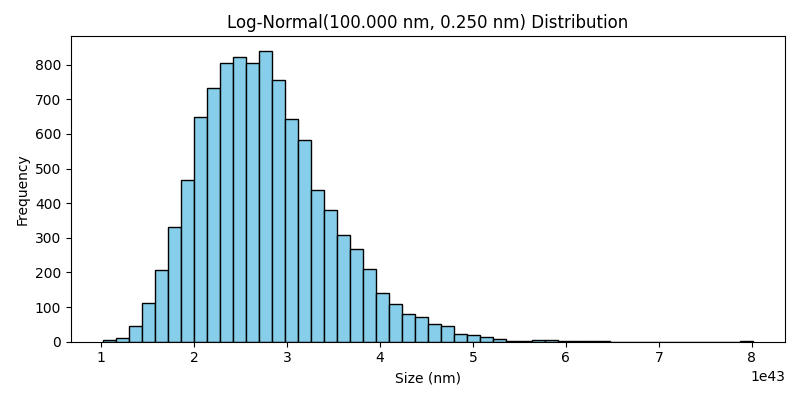
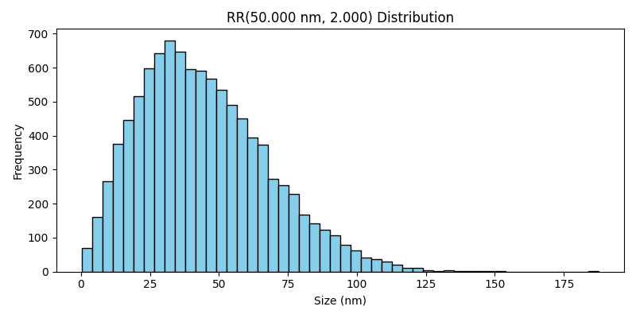
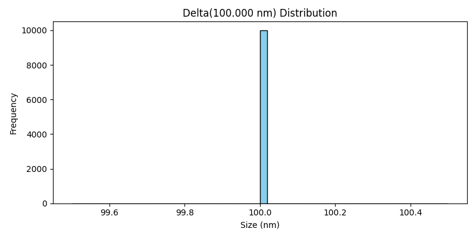
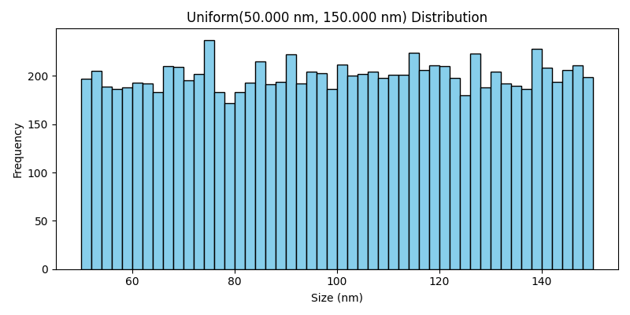

Fluidics#
The FlowCyPy.fluidics package defines the physical input of a simulation.
It describes the geometry of the flow cell, the organization of particle populations, and the statistical distributions used to generate particle properties such as size and refractive index.
Together, these objects define what enters the optical interrogation region and how particles are spatially and temporally distributed before signal generation.
The typical workflow is:
define a
FlowCyPy.fluidics.flow_cell.FlowCellbuild one or more particle populations
collect them in a
FlowCyPy.fluidics.scatterer_collection.ScattererCollectioncombine the collection with the flow cell to create a fluidic configuration
This structure is used throughout FlowCyPy to generate realistic particle arrival statistics and physically consistent event streams.
Flow cell#
The flow cell defines the channel geometry and the hydrodynamic conditions used in the simulation.
It converts the specified sample and sheath flow rates into a focused sample region and provides the velocity field used to model particle transport.
- class FlowCell#
Bases:
pybind11_objectRepresents a rectangular flow cell in which the velocity field is computed from an analytical Fourier series solution for pressure driven flow. The focused sample region is estimated from the volumetric flow rates of the sample and sheath fluids.
The analytical solution for the x direction velocity in a rectangular channel is given by:
\[u(y,z) = \frac{16b^2}{\pi^3 \mu}\left(-\frac{dp}{dx}\right) \sum_{\substack{n=1,3,5,\ldots}}^{\infty} \frac{1}{n^3} \left[ 1 - \frac{ \cosh\left(\frac{n\pi y}{2b}\right) }{ \cosh\left(\frac{n\pi a}{2b}\right) } \right] \sin\left(\frac{n\pi (z+b)}{2b}\right)\]
Fluidics system#
The fluidics system combines a flow cell and a scatterer collection, then generates population-resolved event blocks for an acquisition.
Scatterer collection#
The scatterer collection is the container that stores all particle populations present in the simulated sample.
It provides a convenient interface for combining multiple populations, applying dilution, and passing the resulting sample definition to the fluidics engine.
- class ScattererCollection#
Bases:
pybind11_objectCollection of particle populations used by a flow-cytometry simulation.
The collection is deliberately lightweight: it stores population objects and applies operations that affect the sample as a whole. Concentrations are exposed as Pint quantities in particle / liter, while the C++ implementation stores their magnitudes in SI units.
- Parameters:
populations (sequence of BasePopulation, optional) – Initial populations. The default is an empty collection.
Notes
Population objects are held by shared reference. Consequently,
collection.dilute(2)also updates the concentration observed on each population object passed to the constructor.
Population models#
Population classes describe the physical properties of the particles present in the sample.
A population typically specifies its concentration, refractive index model, diameter distribution, and the sampling strategy used to instantiate individual particles during simulation.
Sphere population#
Use this class for homogeneous spherical particles.
- class SpherePopulation#
Bases:
BasePopulationSpherical population with distribution based physical parameters.
See also
CoreShellPopulationpopulation with separate core and shell properties.
Core-shell population#
Use this class for layered particles composed of a core and a shell with distinct optical properties.
- class CoreShellPopulation#
Bases:
BasePopulationCore shell population with distribution based physical parameters.
The shell thickness is sampled independently from the core diameter. If you need a constrained relationship (e.g., total diameter fixed), implement a dedicated distribution or a custom population class that enforces the constraint.
Population events#
Native population event blocks preserve the sampled dataframe, population metadata, and sampling method used to generate each group of events.
- class PopulationEvents#
Bases:
pybind11_objectStructured event data for one simulated population.
- Parameters:
dataframe (EventDataFrame) – Unit-aware table containing one row per event.
population (object) – Population object that generated the events.
sampling_method (object) – Sampling strategy used to generate the event block.
name (str) – Population name.
scatterer_type (str) – Scatterer type label, such as
SpherePopulation.metadata (dict, optional) – Population-level diagnostic and simulation metadata.
Notes
Construction synchronizes
dataframe.scatterer_typeand ensures thatdataframe.attrs["units"]exists, including for empty blocks.
Distribution models#
Distribution classes define how scalar particle properties are sampled.
They are commonly used for particle diameter, refractive index, or medium refractive index.
These models make it possible to represent monodisperse, weakly polydisperse, or broadly distributed populations within a consistent API.
Normal#
The normal distribution generates values distributed around a mean with symmetric dispersion.
It is appropriate when fluctuations are approximately Gaussian and negative values are either physically excluded by bounds or unlikely within the chosen parameter range.


- class Normal#
Bases:
BaseDistribution
Log-normal#
The log-normal distribution generates strictly positive values whose logarithm follows a normal distribution.
It is commonly used for particle sizes and other positive quantities with right-skewed variation.


- class LogNormal#
Bases:
BaseDistribution
Rosin-Rammler#
The Rosin-Rammler distribution is widely used to model particle size distributions in dispersed materials.
It is particularly useful when the population contains many small particles and progressively fewer large particles.


- class RosinRammler#
Bases:
BaseDistribution
Delta#
The delta distribution represents a fixed value with no dispersion.
It is useful for monodisperse reference populations or for parameters that should remain constant across all simulated particles.


- class Delta#
Bases:
BaseDistribution
Uniform#
The uniform distribution samples values evenly between a lower and an upper bound.
It is appropriate when all values within an interval are considered equally likely.


- class Uniform#
Bases:
BaseDistribution